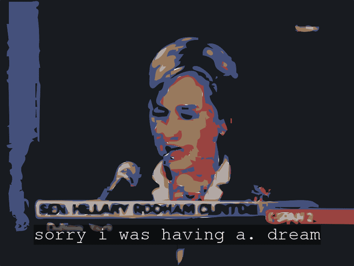

|
| |
|  |
||||
|
Pall
Thayer. "wassup, tYgEr_lil_E?"
|
||||
| Wassup,
tYgEr_lil_E? is an examination of the impact of digital media
on abstract art. The title references Woody
:::::::::::::::::::::::::::::::::::::::::::::::::::::::::::::::::::::::::::::::::::::::::::::::::::::::::::::::::::::::::::::::::::::::::::::::::::::::::::::::::::::::::::::::::::::::::::::::::::::::::::::::::::::::: Pall
Thayer (1968) is an Icelandic artist working with computers and the Internet.
He graduated from the Icelandic College of Art and Crafts in Reykjavik,
Iceland in 1999 with a background in mixed-media. As a Nord-Plus grant
recipient at the Helsinki Academy of Art, he began experimenting with
computers and the Internet as artistic media in 1997. Since then he has
created several works that explore different methods of interaction in
the creation of generative, real-time audio/visual abstractions through
the Internet. His current work focuses on the automated appropriation
and mixing of publicly available material as a means of interaction. His
work has been exhibited widely at festivals and group shows such as Nordic
Interactive in Copenhagen, Transmediale in Berlin, The Boston CyberArts
Festival, Hipersonica/File in :::::::::::::::::::::::::::::::::::::::::::::::::::::::::::::::::::::::::::::::::::::::::::::::::::::::::::::::::::::::::::::::::::::::::::::::::::::::::::::::::::::::::::::::::::::::::::::::::::::::::::::::::::::::: ~Programmed in Perl, Java and Pure Data ~Pace Digital Gallery wishes to thank Pace students Herbie Gilot and Bennett Pursell, whose programming skills and tireless work made this program possible. The
exhibition is made possible, in part, by funding from CIAM
|
||||